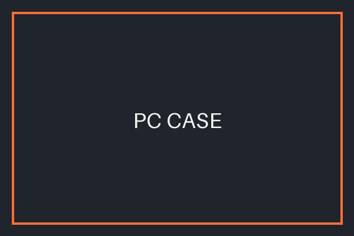
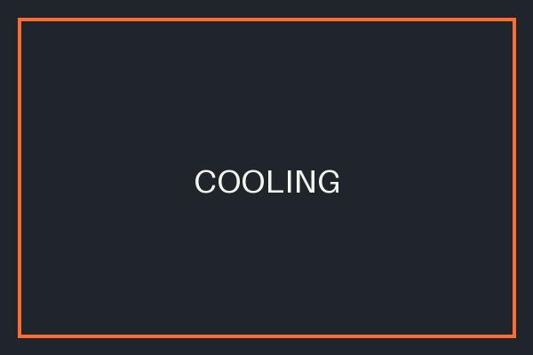

CPU
Purpose: The brain of the computer.
The central processing unit runs program instructions and coordinates tasks.
What to check: Core and thread count, clock speed, socket type (AM5, LGA1700), TDP.
Learn what each part does and what to check before you buy.
Purpose: The brain of the computer.
The central processing unit runs program instructions and coordinates tasks.
What to check: Core and thread count, clock speed, socket type (AM5, LGA1700), TDP.

Purpose: Handles graphics processing and rendering.
The graphics card draws images for games, video, and 3D work.
What to check: VRAM size, memory type, card length, power connectors, recommended PSU.

Purpose: Connects all computer components.
Every part plugs into or communicates through the motherboard.
What to check: CPU socket, chipset, form factor (ATX, micro-ATX), RAM type, M.2 slots.

Purpose: Provides temporary memory for running applications.
RAM holds data your programs are using right now.
What to check: Capacity (16 GB or more), DDR generation, speed in MT/s, dual-channel kits.

Purpose: Stores files, applications, and operating systems.
SSDs are fast and quiet. HDDs offer cheaper capacity for bulk files.
What to check: Capacity, interface (NVMe or SATA), read/write speeds.

Purpose: Supplies electrical power to the computer.
The power supply converts wall power into voltages the parts can use.
What to check: Wattage, 80 PLUS rating, modular cables, connectors for your GPU.

Purpose: Houses and protects the components.
The case holds parts in place and controls airflow.
What to check: Motherboard support, GPU clearance, fan mounts, front panel ports.

Purpose: Helps maintain safe operating temperatures.
Coolers and fans move heat away from the CPU and case.
What to check: Socket compatibility, TDP rating, radiator or heatsink height, noise level.